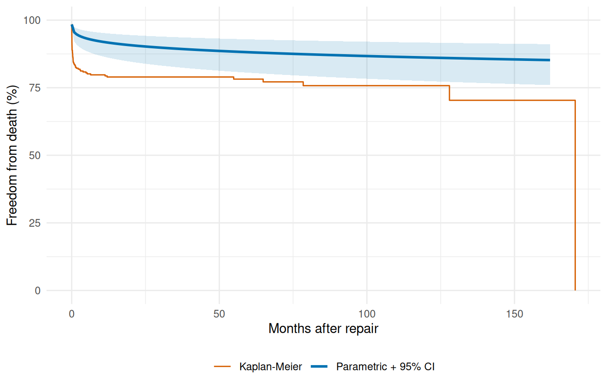

Prediction & Visualization
Survival curves, phase decomposition, and risk profiles
Source:vignettes/prediction-visualization.qmd
A fitted hazard model is only useful insofar as you can extract answers from it. This vignette covers the predict-and-visualize half of the workflow: pulling survival probabilities, cumulative hazards, and patient-level risk scores out of a fitted model, attaching delta-method uncertainty to those predictions, and plotting them in the formats that come up in actual clinical analyses.
The structure mirrors how a real analysis unfolds. We start with the Kaplan-Meier baseline (the nonparametric reference every parametric fit gets judged against), enumerate the prediction types the model exposes, plot the parametric survival curve against KM as a goodness-of-fit check, layer on confidence bands, then move to the multiphase decomposition and patient-specific risk profiles where the covariate machinery pays off. The last section reuses the workflow across multiple endpoints on the same cohort. If you haven’t seen the fitting workflow yet, vignette("fitting-hazard-models") is the prerequisite.
1 Kaplan-Meier baseline
The Kaplan-Meier curve is what the data itself says about survival before any parametric model intervenes. It makes no assumption about the shape of the hazard, handles censoring honestly, and gives you a nonparametric step function that’s the gold-standard reference for any follow-up fit. Every parametric prediction that follows gets compared back to this curve — if a model’s smooth prediction can’t track the KM step function, the model is missing something the data has been telling you all along.
km_df <- data.frame(time = km$time, survival = km$surv * 100)
ggplot(km_df, aes(time, survival)) +
geom_step(linewidth = 0.6) +
scale_y_continuous(limits = c(0, 100)) +
labs(x = "Months after repair", y = "Freedom from death (%)") +
theme_minimal()
2 Prediction types
The predict() method exposes four quantities through its type= argument, each useful for a different downstream question:
-
"linear_predictor"— \(x^\top \beta\), the covariate-driven log-hazard shift. Use it to rank patients on relative risk without pinning down absolute survival probabilities. -
"hazard"— \(\exp(x^\top \beta)\), the multiplicative hazard ratio relative to the baseline. Use it when you want hazard ratios for reporting or for further calculation. -
"cumulative_hazard"— \(H(t \mid x)\), the integrated hazard up to time \(t\) for each row. Use it when you need the raw integrated intensity (decomposing it by phase, for example, or computing derived quantities like the expected number of events). -
"survival"— \(S(t \mid x) = \exp(-H(t \mid x))\), the probability of surviving past time \(t\). This is what clinicians and patients actually want to see; it’s also what we plot for diagnostics.
The two predictions we extract below are "survival" and "cumulative_hazard" — survival for the clinical communication, and the cumulative hazard so we can sanity-check the relationship \(S = \exp(-H)\) holds row-by-row. We fit a multivariable Weibull on the AVC death endpoint first.
Pick a representative patient — here a median-aged, mid-status, no-malalignment, no-grade-IV-complication profile — and evaluate the prediction types over a fine time grid. The result is a data frame with one row per time point, ready for plotting or downstream analysis.
t_grid <- seq(0.01, max(avc$int_dead) * 0.95, length.out = 200)
profile <- data.frame(
time = t_grid,
age = median(avc$age),
status = 2,
mal = 0,
com_iv = 0
)
surv <- predict(fit, newdata = profile, type = "survival")
cumhaz <- predict(fit, newdata = profile, type = "cumulative_hazard")
profile$survival <- surv
profile$cumulative_hazard <- cumhaz
head(profile[, c("time", "survival", "cumulative_hazard")])
#> time survival cumulative_hazard
#> 1 0.0100000 0.9840245 0.01610446
#> 2 0.8242888 0.9552402 0.04579243
#> 3 1.6385776 0.9475408 0.05388532
#> 4 2.4528664 0.9424348 0.05928850
#> 5 3.2671552 0.9385173 0.06345398
#> 6 4.0814440 0.9352997 0.066888313 Parametric survival with KM overlay
The fundamental diagnostic for any parametric survival fit is whether its predictions track the Kaplan-Meier step function. Plot the median-profile survival curve from the previous chunk on top of the KM estimate from the raw cohort. Where the parametric curve hugs the steps, the model is faithful to the data; where it drifts, it’s imposing a shape the data doesn’t support. This isn’t a hypothesis test, it’s an eyeball check — and it’s the single most informative thing you can do with a fitted model before trusting its predictions.
ggplot() +
geom_step(data = km_df, aes(time, survival, colour = "Kaplan-Meier"),
linewidth = 0.5) +
geom_line(data = profile,
aes(time, survival * 100, colour = "Parametric (Weibull)"),
linewidth = 1) +
scale_colour_manual(
values = c("Parametric (Weibull)" = "#0072B2",
"Kaplan-Meier" = "#D55E00")
) +
scale_y_continuous(limits = c(0, 100)) +
labs(x = "Months after repair", y = "Freedom from death (%)",
colour = NULL) +
theme_minimal() +
theme(legend.position = "bottom")
4 Confidence limits on predictions
A point estimate without an uncertainty band tells you what the model thinks, not how confident it is. For patient-level survival predictions that distinction matters: a survival probability of 0.85 with a tight band around it is a fundamentally different number than a survival probability of 0.85 with a 0.4–0.97 band around it, even though both round to “85%”. Delta-method confidence limits let you plot the second case honestly instead of pretending it’s the first.
As of v0.9.8, predict.hazard() accepts se.fit = TRUE (default FALSE) and level = 0.95 to return delta-method standard errors and confidence limits alongside the point estimate. The return value changes shape: a plain numeric vector with se.fit = FALSE, a data frame with columns fit, se.fit, lower, and upper with se.fit = TRUE.
# Build a clean newdata frame (the earlier chunk appended result
# columns to `profile`, which would confuse predict()'s column count).
profile_ci <- data.frame(
time = t_grid,
age = median(avc$age),
status = 2,
mal = 0,
com_iv = 0
)
surv_ci <- predict(fit, newdata = profile_ci,
type = "survival", se.fit = TRUE, level = 0.95)
head(surv_ci)
#> fit se.fit lower upper
#> 1 0.9840245 0.005670665 0.9683980 0.9919560
#> 2 0.9552402 0.013469177 0.9217319 0.9745990
#> 3 0.9475408 0.015528659 0.9095625 0.9698327
#> 4 0.9424348 0.016905898 0.9015154 0.9666641
#> 5 0.9385173 0.017970625 0.8953492 0.9642310
#> 6 0.9352997 0.018851038 0.8902883 0.9622320Confidence limits use SAS-matched transformations chosen so the interval respects the natural range of each quantity: log-scale for hazard and cumulative_hazard (keeps the lower bound positive), and log(-log(S)) for survival (keeps the interval inside \([0, 1]\)). The linear predictor uses symmetric natural-scale CLs. The point isn’t notational fussiness — it’s that a symmetric CI on survival probability would frequently dip below 0 or rise above 1, giving nonsense values that the transformed form avoids by construction.
ci_df <- data.frame(
time = profile_ci$time,
survival = surv_ci$fit * 100,
lower = surv_ci$lower * 100,
upper = surv_ci$upper * 100
)
ggplot() +
geom_step(data = km_df, aes(time, survival, colour = "Kaplan-Meier"),
linewidth = 0.5) +
geom_ribbon(data = ci_df,
aes(time, ymin = lower, ymax = upper),
fill = "#0072B2", alpha = 0.15) +
geom_line(data = ci_df,
aes(time, survival, colour = "Parametric + 95% CI"),
linewidth = 1) +
scale_colour_manual(
values = c("Parametric + 95% CI" = "#0072B2",
"Kaplan-Meier" = "#D55E00")
) +
scale_y_continuous(limits = c(0, 100)) +
labs(x = "Months after repair", y = "Freedom from death (%)",
colour = NULL) +
theme_minimal() +
theme(legend.position = "bottom")
Implementation detail worth knowing: Weibull and multiphase use a closed-form Jacobian for the delta-method calculation. Exponential, log-logistic, and log-normal fall back to numDeriv::jacobian() on a per-call cumulative-hazard closure — identical results, just slightly slower because the Jacobian is computed numerically per prediction point. The user-facing API is the same regardless of distribution.
5 Decomposed multiphase hazard
The multiphase model’s whole point is that the total hazard is a sum of phase contributions. predict() with decompose = TRUE and type = "cumulative_hazard" exposes those contributions row by row, returning a data frame with one column per phase plus a total column. Numerically differentiating each column gives you the instantaneous hazard rate for each phase — which is the diagnostic that tells you whether the multiphase model is doing what you asked of it. The early phase should dominate near \(t = 0\) and fall off, the constant phase should be a flat floor, and the late phase should sit near zero early and rise after a lag.
data(cabgkul)
fit_mp <- hazard(
Surv(int_dead, dead) ~ 1,
data = cabgkul,
dist = "multiphase",
phases = list(
early = hzr_phase("cdf", t_half = 0.2, nu = 1, m = 1,
fixed = "shapes"),
constant = hzr_phase("constant"),
late = hzr_phase("g3", tau = 1, gamma = 3, alpha = 1, eta = 1,
fixed = "shapes")
),
fit = TRUE,
control = list(n_starts = 5, maxit = 1000)
)
t_mp <- seq(0.01, max(cabgkul$int_dead) * 0.95, length.out = 200)
nd <- data.frame(time = t_mp)
decomp <- predict(fit_mp, newdata = nd, type = "cumulative_hazard",
decompose = TRUE)
# Numerical differentiation: h(t) ≈ ΔH(t) / Δt
num_hazard <- function(cumhaz, time) {
dt <- diff(time)
dH <- diff(cumhaz)
c(dH[1] / dt[1], dH / dt)
}
h_long <- rbind(
data.frame(time = t_mp, hazard = num_hazard(decomp$early, t_mp),
Phase = "Early"),
data.frame(time = t_mp, hazard = num_hazard(decomp$constant, t_mp),
Phase = "Constant"),
data.frame(time = t_mp, hazard = num_hazard(decomp$late, t_mp),
Phase = "Late"),
data.frame(time = t_mp, hazard = num_hazard(decomp$total, t_mp),
Phase = "Total")
)
h_long$Phase <- factor(h_long$Phase,
levels = c("Total", "Early", "Constant", "Late"))
ggplot(h_long, aes(time, hazard, colour = Phase, linetype = Phase)) +
geom_line(aes(linewidth = Phase)) +
scale_colour_manual(values = c(Total = "#222222", Early = "#E69F00",
Constant = "#56B4E9", Late = "#CC79A7")) +
scale_linetype_manual(values = c(Total = "solid", Early = "dashed",
Constant = "dashed", Late = "dashed")) +
scale_linewidth_manual(values = c(Total = 1.3, Early = 0.7,
Constant = 0.7, Late = 0.7)) +
labs(x = "Months after CABG", y = "Hazard rate",
colour = "Phase", linetype = "Phase", linewidth = "Phase") +
theme_minimal() +
theme(legend.position = "bottom")
Each phase is doing its job. The early (orange) phase captures the steep post-operative risk that peaks within the first months. The constant (blue) phase represents the ongoing background mortality that persists once patients are past the operative window. The late (pink) phase captures the gradually increasing risk of late attrition — graft failure, comorbidity progression, the aging cohort. Crucially, none of these shapes was specified by hand; the optimizer landed on them given the data and the phase-type choices we made up front. If a phase looked wrong here (a constant phase dominating where we expected an early peak, or a late phase that never rose) that would be a signal to revisit either the starting values, the shape parameters, or the data itself.
6 Multiphase survival with KM overlay
The decomposed-hazard plot above tells us the model has the right shape per phase. To check that the total fit also tracks the data, we collapse back to the overall survival curve and overlay it on the KM estimate — same diagnostic as the single-Weibull case earlier in this vignette, but now against a model that has the structural flexibility to follow the cohort’s actual mortality pattern.
surv_mp <- predict(fit_mp, newdata = nd, type = "survival") * 100
ggplot() +
geom_step(data = km_df, aes(time, survival, colour = "Kaplan-Meier"),
linewidth = 0.5) +
geom_line(data = data.frame(time = t_grid, survival = surv_mp),
aes(time, survival, colour = "Multiphase (3-phase)"),
linewidth = 1) +
scale_colour_manual(
values = c("Multiphase (3-phase)" = "#0072B2",
"Kaplan-Meier" = "#D55E00")
) +
scale_y_continuous(limits = c(0, 100)) +
labs(x = "Months after AVC repair", y = "Freedom from death (%)",
colour = NULL) +
theme_minimal() +
theme(legend.position = "bottom")
7 Patient-specific risk profiles
This is the payoff of having covariates in the model. A population-level curve is fine for cohort-level reporting, but the question a clinician usually wants answered is: what does the model predict for this particular patient, given their risk factors? Holding the fitted model fixed and varying the covariate profile generates patient-specific survival curves you can show side by side. Below we score three plausible profiles drawn from the cohort’s own quantiles — a low-risk patient (young, mild status, no malalignment, no grade-IV complications), a median patient, and a high-risk patient (older, severe status, with both adverse anatomical and post-operative findings).
profiles <- list(
"Low risk" = data.frame(age = quantile(avc$age, 0.25),
status = 1, mal = 0, com_iv = 0),
"Median" = data.frame(age = median(avc$age),
status = 2, mal = 0, com_iv = 0),
"High risk" = data.frame(age = quantile(avc$age, 0.90),
status = 4, mal = 1, com_iv = 1)
)
curves <- do.call(rbind, lapply(names(profiles), function(nm) {
nd <- profiles[[nm]][rep(1, length(t_grid)), ]
nd$time <- t_grid
data.frame(time = t_grid,
survival = predict(fit, newdata = nd, type = "survival") * 100,
Profile = nm)
}))
curves$Profile <- factor(curves$Profile,
levels = c("Low risk", "Median", "High risk"))
ggplot(curves, aes(time, survival, colour = Profile)) +
geom_line(linewidth = 0.9) +
scale_colour_manual(values = c("Low risk" = "#009E73",
"Median" = "#0072B2",
"High risk" = "#D55E00")) +
scale_y_continuous(limits = c(0, 100)) +
labs(x = "Months after AVC repair", y = "Freedom from death (%)",
colour = NULL) +
theme_minimal() +
theme(legend.position = "bottom")
The gap between the three curves is the model’s prognostic discrimination: a wider spread means the covariates are doing real work, separating patients with different actual risk levels. A collapsed plot (all three curves on top of each other) means the covariate effects are too weak to distinguish patients meaningfully, even if they’re statistically significant.
8 Multi-endpoint visualization: valves
When a cohort has multiple clinical endpoints — death, valve endocarditis, reoperation — putting them on the same survival axis gives an immediate comparative picture of which event the cohort is most at risk for, and over what time horizon. The valves dataset has separate event-time pairs for each endpoint, so we can plot all of them as Kaplan-Meier curves on shared axes without needing a parametric fit at all. (You’d parametrize them in the next step, one endpoint per hazard() call, as we did in vignette("fitting-hazard-models").)
data(valves)
valves <- na.omit(valves)
km_death <- survfit(Surv(int_dead, dead) ~ 1, data = valves)
km_pve <- survfit(Surv(int_pve, pve) ~ 1, data = valves)
ep_df <- rbind(
data.frame(time = km_death$time, survival = km_death$surv * 100,
Endpoint = "Death"),
data.frame(time = km_pve$time, survival = km_pve$surv * 100,
Endpoint = "PVE")
)
ggplot(ep_df, aes(time, survival, colour = Endpoint)) +
geom_step(linewidth = 0.7) +
scale_y_continuous(limits = c(0, 100)) +
scale_colour_manual(values = c("Death" = "#D55E00", "PVE" = "#0072B2")) +
labs(x = "Months after valve replacement",
y = "Freedom from event (%)", colour = NULL) +
theme_minimal() +
theme(legend.position = "bottom")